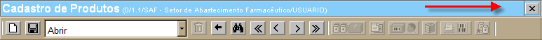

|
|
Tela e Formulário
Os termos "Tela" ou "Formulário" são utilizados indistintamente neste manual para se referir a uma página do Sistema. |
2. Aspectos gerais
Algumas características essenciais das telas do Sistema são abordadas aqui. Compreendê-las tornará a experiência de navegação ainda mais fácil e produtiva.2.1. Tipos de telas
Para se adequar às diferentes necessidades de gestão, o Sistema possui as seguintes modalidades de tela:
2.1.1. Tela principal do Sistema2.1.2. Cadastro de dados
2.1.3. Tela de parâmetros
2.1.4. Telas especiais
2.1.5. Tabelas auxiliares da tela
2.1.6. Relatórios do Sistema
2.1.1. Tela principal do Sistema
Esta é a principal tela do Sistema, onde são apresentados aos usuários todos os menus disponíveis. Cada menu está associado a um módulo integrado da gestão hospitalar e contém links de acesso aos formulários e suas respectivas funcionalidades. Para acessar uma das funcionalidades contidas em um menu, clique no link de nome correspondente.No canto superior direto da tela, os botões Início, Ajuda e Sair são exibidos permanentemente durante a navegação no Sistema. Estão descritas abaixo as funções de cada um destes botões.
| Clique neste botão, para a qualquer momento retornar à tela principal do Sistema. | |
| Este botão dá acesso ao índice de manuais de ajuda às telas disponíveis ao usuário. Quando acionado, uma nova janela é aberta e exibe uma listagem contendo todos os manuais (ver imagem 2 abaixo). | |
| Clique neste botão para sair do Sistema e retornar à tela de entrada no Sistema. Dependendo do navegador utilizado, uma mensagem de confirmação será exibida: "Você deseja fechar esta aba?". Clique em "Sim" para fechá-la ou "Não" para retornar à tela de entrada no Sistema |
A tela principal também exibe um indicador do usuário com a sessão atual no Sistema, além do local onde o mesmo está alocado (ver imagem 3 abaixo).
|
Manuais de Ajuda
Os manuais de ajuda de tela são feitos com base no fluxo de utilização do usuário. Eles contêm um passo-a-passo que aborda desde a criação do registro até o momento em que o mesmo é processado, passando por sua ordem natural de preenchimento. Todos os componentes da tela são analisados e os passos são ilustrados para o fácil entendimento do leitor. |
2.1.2. Cadastro de dados
As telas do tipo cadastro de dados permitem a criação e edição de um registro. No Cadastro de Produtos, por exemplo, o usuário pode editar todos os detalhes de um medicamento: descrição, unidades de medida associadas, classificações, códigos de barras, etiquetas, interações medicamentosas, etc.
As telas de cadastro são compostas basicamente por quatro elementos: cabeçalho, barra de botões, abas e campos de dados. Por meio destes, o usuário pode criar e editar cadastros no Sistema.
|
Atalho para registros recentes
As
telas de cadastro possuem um histórico recente dos últimos registros
abertos. Clique em abrir (ver imagem abaixo) visualizar os registros
recentes e abri-los com um clique.
Imagem 6 - Detalhe de como abrir registros recentes |
2.1.2.1. Cabeçalho da tela
O cabeçalho de uma tela exibe três informações importantes para o usuário: 1) o Título do formulário, 2) Local onde o usuário está alocado e 3) Usuário com acesso ao Sistema (ver imagem abaixo).Image 7 - Detalhe das informações contidas no cabeçalho
|
Atalho para a tela "Alterar Local"
Se desejar alterar o local onde está alocado, o usuário pode fazê-lo por meio de um atalho na própria tela em que se encontra. Com um clique no informativo de local e usuário, o usuário será direcionado à tela "Alterar Local". Imagem 8 - Detalhe do atalho à tela "Alterar Local" |
2.1.2.2. Barra de botões
A barra de botões é composta de botões padrão e botões específicos a uma tela. A seguir estão alguns dos botões mais comuns no Sistema: Novo |
Clique neste botão para criar um novo registro. O cadastro será carregado em branco para edição de um novo registro. |
 Salvar |
Este botão tem por função salvar todos os dados e alterações realizadas no cadastro. |
 Procurar |
O botão [Procurar] dá acesso
à tela
de pesquisa de cadastros. A Ferramenta de Busca é uma
das funcionalidades mais importantes do Sistema. Ela permite
que
o usuário pesquise entre todos os registros
existentes cadastrados em um formulário. Para auxiliar a pesquisa,
o usuário pode se utilizar de filtros
relevantes à pesquisa e tipos de pesquisa customizados para refinar os
resultados. A Ferramenta de Busca é abordada em
detalhes na seção Ferramenta
de Busca deste guia. |
Voltar |
Utilize este botão para retornar à tela anterior do Sistema. |
 Excluir |
Este botão tem por função excluir o registro de cadastro ou transação exibida na tela. |
Próximo Registro |
Clique neste botão para abrir o próximo registro cadastrado. |
Registro Anterior |
Clique neste botão para abrir o registro anterior. |
 Último Registro |
Ao clicar neste botão, o sistema abrirá o último registro cadastro. |
Primeiro Registro |
Ao clicar neste botão, o sistema abrirá o primeiro registro cadastrado. |
 OK |
Utilize
este botão para processar uma operação na tela. Por exemplo, após
configurar os dados de uma tela de Consulta, clique no botão [OK] para processar a
consulta. |
 Copiar |
Este botão está disponível em
algumas telas, onde possibilita a utilização de um registro
existente como base para um novo cadastro similar. Assim, após
localizar e abrir o cadastro do registro que se deseja utilizar
como base, clica-se no botão [Copiar] para criar
um novo
registro com os mesmos dados. Após a edição do novo cadastro,
lembre-se de salvá-lo. |
 Atualizar |
Nas telas em que são utilizados dados externos em tempo real, este botão acionará uma atualização imediata dos dados exibidos em tela. |
 Relatório |
Em telas que possuem relatório geral
para um cadastro ou transação, clique no botão [Relatório]
parar
acessá-lo. Por razão de layout de tela, o ícone  também é utilizado
este fim. também é utilizado
este fim. |
|
Botões habilitados e desabilitados Os
botões exibidos na tela podem estar indisponíveis em um determinado
momento. Um botão pode estar desabilitado, por exemplo, porque o
registro em questão já foi processado.
Posicione o mouse sobre um botão desabilitado para que uma mensagem seja exibida com a razão da indisponibilidade do botão. Os botões desabilitados são exibidos sombreados e sem cor: |
|
Encerrando
a sua sessão no Sistema
Em
geral, as telas do Sistema possuem um botão no canto superior. Ao clicá-lo, o
usuário encerra sua sessão atual e é direcionado à tela de entrada no
Sistema.
 Imagem 10 - Detalhe do botão "X" no canto superior direito da tela |
2.1.2.3. Abas
Uma tela pode compreender diversos lotes de informação acerca de uma única funcionalidade. Dependendo de seu volume, as informações podem ser distribuídas em diferentes abas de um formulário. A separação de conteúdo é orientada por uma lógica que agrupa em abas tipos de informação e de campos semelhantes. Isso garante maior organização espacial e rapidez no acesso a informações. Clique em uma aba para que suas informações sejam exibidas na tela.Em geral, todas as telas de cadastro possuem uma aba "Controle". Ali são gravados automaticamente os dados principais de um registro, como data, hora e responsável pela criação e última alteração do mesmo. Isso permite que todas as transações possam ser rastreadas por usuário responsável e por hora.
2.1.2.4. Campos de dados
Campos são locais no Sistema onde é possível armazenar um determinado tipo de dado. No "Cadastro de Pacientes", por exemplo, há diversos campos onde são guardadas informações como o nome do paciente, sua data de nascimento, filiação, etc. Uma vez que armazenam e exibem informações variadas no Sistema, os campos podem se diferenciar um dos outros por seu funcionamento e por regras a ele associadas.2.1.2.4.1. Tipos de campos
Abaixo estão detalhados os campos mais comuns:Em todo o programa, este é o campo mais comum e que recebe as unidades de informações mais simples. Neste tipo de campo são inseridos (ou exibidos) dados como nomes, endereços, número de nota fiscal, etc.
Estes são campos que possuem uma opção de pesquisa, que pode ser utilizada para que o usuário selecione um valor a partir de uma listagem de valores existentes. Ao clicar no botão
 [Procurar], uma janela é aberta para que o usuário realize uma pesquisa
para localizar o valor desejado. Filtros aplicáveis à pesquisa em
questão poderão ser utilizados para refinar os resultados e facilitar a
localização do valor desejado. Para mais informações sobre a função de
pesquisa, favor referir-se a seção Ferramenta de
Busca deste manual.
[Procurar], uma janela é aberta para que o usuário realize uma pesquisa
para localizar o valor desejado. Filtros aplicáveis à pesquisa em
questão poderão ser utilizados para refinar os resultados e facilitar a
localização do valor desejado. Para mais informações sobre a função de
pesquisa, favor referir-se a seção Ferramenta de
Busca deste manual.Imagem 16 - Detalhe do ícone da ferramenta de busca após o campo
Este tipo de campo também exibe uma lista de valores, porém, devido à natureza da informação, é dada ao usuário a possibilidade de selecionar mais de uma opção (na imagem abaixo, em detalhe, estão selecionadas as opções Atenção básica, Alta Complexidade e Atendimento Hospitalar).
Para fazer a seleção de mais de mais de um valor, pressione a tecla Ctrl do teclado e, ao mesmo tempo, selecione com um clique os valores desejados.
O campo do tipo Texto permite ao usuário armazenar grandes quantidades de informação em textos informativos.
 [Texto formatado], localizado no canto
inferior direito do campo (ver imagem acima).
[Texto formatado], localizado no canto
inferior direito do campo (ver imagem acima). Imagem 21 - Detalhe da visualização do campo de texto via botão
Campo de data
Este é o tipo de campo que permite ao usuário realizar a entrada de datas no Sistema. Pode-se informar uma data de duas maneiras:
- Data atual: digite o sinal . (ponto) e pressione a tecla "Enter" para que o sistema retorne a data atual;
- Data do mês corrente: digite o dia do mês e pressione a tecla "Enter" para que o sistema retorne o mês e ano correntes;
- Dias a contar da data atual: digite o sinal + (mais) ou - (menos) antes do número de dias em referência à data atual e pressione a tecla "Enter" para a data anterior ou posterior à data atual.
Este é um tipo de campo que oferece que permite a seleção sim ou não por parte do usuário. Em um campo seleção o Sistema exibe uma opção de cadastro que, se desejada, o usuário deve marcá-la com um clique.
|
Chave
primária
Muitas vezes, o campo do tipo Chave Primária não precisa ser preenchido. Isso acontece quando este campo possui o sinal + (mais). Neste caso, ao salvar o registro, o sistema o fará utilizando-se automaticamente do próximo número disponível para o novo registro. |
2.1.2.4.2. Regras de campos
Os campos podem ter comportamentos diferentes a depender da tela e funcionalidade em questão. Por exemplo, um campo pode ter preenchimento obrigatório, opcional ou estar disponível apenas para leitura. Abaixo estão alguns comportamentos mais comuns.Os campos somente-leitura são aqueles sombreados de cinza (ver imagem abaixo). Eles não permitem ao usuário a sua edição, logo seus conteúdos são apenas para consulta.
2.1.2.4.3. Agrupamento de campos
2.1.2.5. Entrada de dados em grade
O recurso de entrada de dados em grade é amplamente utilizado no Sistema quando se trata da elaboração de uma lista de itens afins. No ato do recebimento e movimentação de produtos, por exemplo, estes são informados em grade, manualmente ou por meio de um leitor de código de barras. Dados adicionais, como quantidade e preço do produto, são informados em outras colunas presentes na grade.Imagem 30 - Exemplo de entrada de dados via Grade
Imagem 31 - Indicadores de exibição da grade
Novo |
Clique neste botão sempre que desejar adicionar um novo item à grade. Ao clicá-lo, uma nova linha será exibida para preenchimento. |
Excluir |
Utilize este botão para excluir um item, uma linha da grade. Atenção: antes de clicá-lo, é necessário selecionar com um clique a linha que deseja excluir. |
Procurar |
Este botão permite que
o usuário pesquise entre todos os itens
adicionados à grade. É especialmente útil para grades em que foram
inseridos numerosos itens e deseja-se revisar algum item específico. Ao
clicar no botão da grade, uma janela
de pesquisa será aberta com alguns filtros pertinentes para fácil
localização do item desejado. Para mais informações sobre as pesquisas
do Sistema, favor referir-se à seção Ferramenta
de Busca do presente manual. |
Copiar |
Este botão está disponível em algumas grades e permite a criação de uma nova linha com os dados copiados de outra linha. Atenção: antes de clicá-lo, é necessário selecionar com um clique a linha que deseja utilizar como base para a nova linha. |
 Exportar para Excel |
Utilize este botão para exportar o conteúdo da grade para uma planilha de Excel (ver imagem abaixo). Após clicá-lo, o usuário será questionado se deseja abrir a planilha ou salvá-la em um arquivo XLS. |

Quando exibida, a grade já possui uma ordem pré-definida das colunas disponíveis. Porém, é possível reposicioná-las à maneira que o usuário preferir. Para isso, basta clicar na coluna que desejar reposicionar e arrastá-la até o ponto em que deseja que ele permaneça.
Você pode definir a largura das colunas que são exibidas na grade. Às vezes, os valores das colunas são extensos e não podem ser exibidos integralmente. Para redimensioná-la, posicione o cursor na borda da coluna que deseja redimensionar. Assim que o fizer, um sinal de setas será exibido como cursor.
Imagem 39 - Cursor de setas entre uma coluna e outra
Em seguida, basta arrastá-lo para o lado desejado e soltar o cursor quando a extensão estiver correta. Neste exemplo, o cursor foi arrastado para a direita, de modo que o conteúdo do campo "Produto" fosse mais amplamente visualizado (ver imagem abaixo).
Por vezes, uma tabela de dados é exibida na parte inferior da tela para auxiliar o preenchimento da grade. No exemplo abaixo, ao selecionar com um clique a linha do produto Oxigênio Gasoso, uma tabela contendo todos os lotes disponíveis do produto é exibida para a seleção do endereço/lote para transferência. Dependendo do tipo de política do item, informações aplicáveis como Marca, Programa e Validade podem ser exibidos.
Imagem 42 - Detalhe do campo "Lote" da grade preenchido via tabela auxiliar
2.1.2.5.1 Grade - Entrada de dados via leitor de código de barras
Em determinadas telas, a entrada de dados em grade é realizada via leitor de código de barras. Nesses casos, a grade exibe na parte superior um campo "Scan", onde é realizada a leitura de código dos produtos.Assim que o código do produto é lido, os campos da grade são preenchidos com os dados do mesmo. Para não ter de efetuar a leitura de um mesmo produto várias vezes, dá-se a opção ao usuário de fazer a leitura do produto uma vez e digitar manualmente a quantidade da operação.
Imagem 44 - Detalhe dos campos da grade preenchidos via leitura de código de barras
Caso haja algum problema ao efetuar a entrada de dados via código de barras, é possível, alternativamente, realizá-la manualmente. Neste caso, refira-se às instruções do tópico anterior neste manual.
2.1.3. Tela de parâmetros
Alguns formulários do Sistema funcionam como um catálogo de informações de uma única natureza. Nestes casos, os parâmetros são identificados com um código e uma descrição. Um exemplo cadastro de parâmetros é a tela "Cadastro de Códigos de Barras", associada à tela "Cadastro de Produtos".Imagem 45 - A tela "Código de Barras" é um exemplo de tela de parâmetros
2.1.4. Telas especiais
Em
alguns módulos, por razão de necessidades específicas de uma
funcionalidade, uma versão de tela customizada pode ser utilizada.
Nestes casos, para maior conhecimento do funcionamento do formulário,
favor ver o manual de ajuda do mesmo. Para informações sobre o acesso
aos manuais de ajuda de tela, ver o tópico Tela
principal do Sistema deste manual.
Imagem 46 - Dashboard de Produção
Imagem 47 - Visualização Gráfica do Armazém - Módulo
Imagem 48 - Visualização Gráfico do Armazém - Rua
2.1.5. Tabelas auxiliares do formulário
Em algumas telas do Sistema são exibidas tabelas auxiliares na parte inferior do formulário. Nesses casos, as tabelas exibem informações relevantes, como documentos e transações relacionadas ao registro principal. Abaixo estão alguns exemplos de telas e tabelas auxiliares.Imagem 49 - Detalhe de arquivos associados a um Produto
Imagem 50 - Tabela auxiliar para escolha de um lote de produto
Imagem 51 - Detalhe da tabela de informações associadas a um registro de recebimento
2.1.6. Relatórios do Sistema
Algumas telas do Sistema possuem uma função "Relatório", que é a versão para impressão dos dados de uma transação ou cadastro. Os relatórios geralmente só ficam acessíveis (em geral, via os botões ou ) após o registro ter sido
processado. Imagem 52 - Detalhe do botão "Relatório" habilitado na tela
Ao clicar para visualizar a versão para impressão de algumas telas, o Sistema exibe uma tela chamada "Filtros do Relatório". Ali são definidas a forma de ordenamento do mesmo. Os dados do relatório podem ser separados por grupos de produto e/ou ordenados pelo número de sequência do item, pelo código ou descrição do produto.
Imagem 53 - Filtros do Relatório
Após selecionar o modo de ordenamento desejado, clique em
[OK] para processar o
documento.Imagem 54 - Exemplo de relatório: Nota de Recebimento - Contábil
Para imprimir e salvar um relatório, utilize os botões
 [Imprimir] e [Salvar].
[Imprimir] e [Salvar]. |
Impressão obrigatória Em alguns casos, a impressão do
relatório é obrigatória em fluxo, por
exemplo, quando o usuário deve imprimir uma lista de separação antes de
transferir um produto.
|
3. Ferramenta de Busca
Na gestão integrada de uma rede ampla e complexa de dados, é fundamental que o usuário seja capaz de acessar facilmente as informações desejadas em tempo real. O Sistema oferece uma poderosa ferramenta de busca que garante acesso rápido a todos os dados controlados, por meio de pesquisas em qualquer um dos campos de dados.
Em todas as telas de cadastros e
transações, por meio do botão [Procurar]
da barra de botões, é possível pesquisar um
registro específico de cadastro ou transação. De forma
semelhante, por meio do botão
[Procurar] pode-se preencher determinados campos do Sistema a partir de
uma pesquisa entre todos os registros associados. Estas
pesquisas são
realizadas com o auxílio de um mecanismo avançado de filtros
customizáveis. Além disso, as telas de busca podem conter tipos de
pesquisa pré-definidos, com diferentes filtros para perfis diferentes
de pesquisa (chamados "Favoritos").
3.1. Elementos da Ferramenta de Busca
Alguns dos principais elementos da ferramenta de busca estão elencados na imagem abaixo (ver números correspondentes):Imagem 55 - Elementos da Ferramenta de Busca
1 - Título da Pesquisa
2 - Pesquisas Favoritas
3 - Botões
4 - Seleção de Campos
5 - Status da Pesquisa
6 - Tabela de Resultados
7 - Selecionador de Campos
8 - Procurar: pesquisando um cadastro ou transação
Imagem 56 - Título da Pesquisa
A ferramenta de busca permite a criação de perfis de pesquisa pré-definidos, chamados "Favoritos". Na imagem abaixo, estão em evidência duas pesquisas favoritas dentro do Cadastro de Produtos: "Medicamentos" e "Materiais". Cada uma destas, quando clicadas, traz um conjunto de filtros adequados para o tipo de pesquisa desejada, ou seja, pesquisa de registros de Medicamentos ou Materiais cadastrados.
Imagem 57 - Perfis de pesquisas pré-definidas
|
Favorito é salvo para a próxima pesquisa Quando um favorito de pesquisa é selecionado para o usuário, o Sistema salva a seleção do mesmo para a próxima pesquisa na tela em questão. |
[Novo]. Uma
janela será aberta para que o usuário digite o nome do favorito de
pesquisa que deseja criar.Imagem 58 - Janela para criação de novo favorito
- Descrição. Edite aqui o nome do favorito de pesquisa.
- Local. Se desejar que o acesso a este favorito seja restrito a apenas um local, selecione-o aqui. Se nenhum local é selecionado aqui, o favorito é acessível nesta tela a partir de todos os locais cadastrados.
- Usuário. Para restringir o acesso a este favorito a apenas um usuário, selecione-o aqui. Se este campo é deixado em branco, o favorito será acessível a todos os usuários cadastrados.
- Somente este formulário. A pesquisa para um determinado campo pode ser acessível em várias telas do Sistema. Marque esta opção se desejar que este favorito só seja exibido na tela em questão.
- Mostrar? Marque esta opção para indicar que este campo deve ser exibido para este favorito de pesquisa. Se desejar, o usuário pode salvar nos campos algum valor padrão. Exemplo: para o campo "Cód. Produto", pode-se salvar um valor padrão para exibir resultados de produtos cujo código se inicia com "100".
 da tela de pesquisa para
salvar as alterações realizadas.
da tela de pesquisa para
salvar as alterações realizadas.Para mais informações sobre como adicionar ou remover filtros de um favorito, favor referir-se à seção Seleção de Campos deste manual.
|
Acesso restrito a criação
de favoritos
A criação de novos favoritos de pesquisa é facultada apenas a usuários com um determinado perfil de acesso. Desta forma, é possível que apenas parte destes botões sejam exibidos para você. |
Dependendo do nível de acesso do usuário, a ferramenta de busca pode conter botões de auxílio à criação de favoritos de pesquisa e exportação do conteúdo da pesquisa exibida em tela.
Imagem 60 - Botões da Ferramenta de Busca
Os botões da Ferramenta de Busca são:
Novo |
Utilize este
botão para criar um novo favorito de pesquisa. Ao clicar no
botão , uma
janela será aberta para que o usuário digite o nome do favorito de
pesquisa que deseja criar. |
Abrir |
Após
selecionar um favorito, clique no botão para editá-lo. A
imagem abaixo exibe as opções de edição do favorito, que incluem
descrição, local para pesquisa, usuário com acesso ao favorito, entre
outras.
Imagem 61 - Detalhes do favorito de pesquisa Após editar as informações de um favorito, clique no botão da tela de pesquisa para
salvar as alterações realizadas. |
Imprimir |
Clique neste botão para imprimir os
resultados da pesquisa. Assim que o botão é clicado, uma
mensagem de confirmação é exibida. Atenção: dependendo da quantidade de resultados na tabela, o processo de impressão pode levar alguns minutos. Quando todos os resultados são carregados em uma tabela, é possível prosseguir com a impressão. |
Copiar |
Utilize este botão para carregar
copiar todos os resultados da pesquisa para a área de transferência. Ao
clicá-lo, uma mensagem de confirmação será exibida: Imagem 62 - Mensagem de confirmação
|
Exportar para Excel |
Utilize este botão para exportar o conteúdo da grade para uma planilha de Excel (ver imagem abaixo). Após clicá-lo, o usuário será questionado se deseja abrir a planilha ou salvá-la em um arquivo XLS. |
Exportar para CSV |
Clique no botão para exportar os resultados da pesquisa para uma tabela CSV. O formato CSV ("Comma-Separated Values", em português "Valores Separados por Vírgula") é basicamente uma tabela que contempla dados em linhas e colunas. |
|
Botões restritos
Dependendo do perfil de
acesso ao Sistema, alguns dos botões acima podem não ser exibidos ao
usuário.
Para mais
informações sobre o seu nível de acesso, entre em
contato com o responsável pelo Setor de Tecnologia.
|
|
Pesquisas especiais
Em alguns casos, onde o volume de dados pesquisados é demasiadamente grande, é possível que a tela de pesquisa possua o botão [OK].
Para que o carregamento de dados na tela não seja excessivamente longo, as telas com este botão não retornam resultados automaticamente. Neste caso, é preciso configurar os filtros de pesquisa com os dados desejados e, em seguida, clicar no botão para que a tela processe e exiba os
resultados da pesquisa. |
Imagem 63 - Seleção de Campos
À medida que o usuário digita um valor em um campo-filtro, o Sistema retorna automaticamente na tabela de resultados todos os registros correspondentes. Não é necessário preencher todos os filtros, porém quanto mais informações são informadas, mais restrita será a pesquisa e mais fácil será a localização do registro desejado.
Imagem 64 - Tratamento dado às informações digitadas nos filtros
| MAIOR
QUE |
Esta é uma opção que pode ser
utilizada para campos numéricos. Assim, quando um valor base é
informado, apenas registros cujo valor referido é superior (>)
ao valor base são exibidos na tabela de resultados. Exemplo: se o valor 1 é informado para esta opção, apenas registros com valores iguais a 2 ou maiores serão exibidos nos resultados. |
| MENOR QUE | Opção para campos numéricos, quando
o tipo "menor que"
é selecionado, apenas registros cujo valor
referido é inferior (<)
ao valor base são exibidos na tabela de resultados. Exemplo: se o valor 10 é informado para esta opção, apenas registros com valores iguais a 9 ou menores serão exibidos nos resultados. |
| IGUAL A | Quando esta opção é utilizada, somente valores idênticos ao conteúdo informado são exibidos. Caso nenhum valor idêntico seja encontrado, o Sistema não retornará nenhum resultado. |
| DIFERENTE DE | Esta opção funciona inversamente ao tratamento "Igual a". Quando a pesquisa possui filtro diferente do valor X, qualquer valor que não seja igual a X será exibido na tabela de resultados. |
| INICIA COM | Ao selecionar esta opção, basta que o usuário digite os caracteres inicias do valor em questão para que o Sistema retorne automaticamente todos os registro que se iniciam com o conteúdo digitado. |
| CONTÉM | Com esta opção, o Sistema pesquisa todos os registros que contêm o conteúdo digitado, independente da posição onde este valor se encontra. Exemplo: uma pesquisa que busca registros que contêm 123 pode retornar valores como 12345, 45123, 6712389, etc. |
| COMO | A opção Como pode ser
utilizada quando se deseja que a pesquisa de dados siga um determinado
padrão. Dois caracteres são chave para a utilização deste campo: o traço inferior (_)
e o sinal de porcentagem
(%). O sinal traço inferior "_" é um caractere curinga utilizado para se referir a um único caractere, enquanto o sinal de porcentagem "%" é um caractere curinga utilizado para se referir a múltiplos caracteres. Exemplo:
|
| ENTRE | Esta
opção é utilizada para
realizar pesquisas em uma faixa de valores. Exemplo:
|
|
Pesquisa
não retorna nenhum resultado
Caso a busca de dados não retorne nenhum resultado, verifique se todos os dados inseridos nos filtros estão corretos. Um erro de digitação pode causar que a sua pesquisa não retorne resultados. |
Uma das grandes qualidades da Ferramenta de Busca é permitir ao usuário a personalização de pesquisas mais avançadas. Para restringir uma pesquisa, é possível adicionar ou remover um filtro de pesquisa. Por meio do Selecionador de Campos (ver imagem abaixo), tem-se acesso a todos os campos do Sistema que podem ser utilizados para a configuração de uma pesquisa mais específica.
Imagem 66 - Detalhe dos filtros disponíveis para a pesquisa
Imagem 67 - Detalhe das categorias de campos
Imagem 68 - Status da Pesquisa
Imagem 69 - Tabela de resultados da pesquisa
Em algumas telas do Sistema, porém, devido a um número excessivo de dados e visando otimizar o desempenho da tela, opta-se por não processar todos os resultados automaticamente. A tela apenas irá processar e exibir os resultados após o usuário configurar alguns filtros da pesquisa e clicar no botão
[OK] (ver imagem abaixo). O
Sistema salva na tela a última pesquisa realizada pelo usuário.Imagem 70 - Detalhe do botão "OK" em telas de pesquisa muito abrangentes
Adicionar colunas à tabela de resultados
A Ferramenta de Busca permite ao usuário a inclusão na tabela de resultados de informações adicionais dos itens pesquisados. Por meio do Selecionador de Campos (ver imagem abaixo), tem-se acesso a todos os campos do Sistema que podem ser utilizados para uma pesquisa mais específica.
Imagem 72 - Detalhe do campo "Cód. ATC/Princípio Ativo" arrastado à tabela de resultados
Imagem 73 - Detalhe do campo "Cód. ATC" integrado à tabela
|
Acesso alternativo ao
Selecionador de Campos
Outra forma de acessar o Selecionador de Campos é por meio de um clique com o botão direito sobre o título de uma coluna. Ao efetuar o clique, um menu de opções é exibido ao usuário com a opção "Selecionador de Campos" (ver imagem abaixo). Ao clicá-lo, a lista de campos disponíveis para a pesquisa é exibida na parte superior esquerda da tela. Imagem 74 - Detalhe do menu de opções ao clicar com o botão direito do mouse no título da coluna |
Se desejar remover uma coluna para que esta não seja exibida na tabela de resultados, clique com o botão direito do mouse sobre o título da mesma. Será exibido ao usuário um menu de opções (ver imagem abaixo). Clique em "Remover esta coluna" para excluir a coluna.
Imagem 75 - Detalhe do menu de opções ao clicar com o botão direito do mouse no título da coluna
Imagem 76 - Detalhe da coluna "Cód." sendo reposicionado para após o campo "Descrição Resumida"
Redimensionar Colunas
Você pode definir a largura das colunas que são exibidas na tabela de resultados. Às vezes, os valores das colunas são extensos e não podem ser exibidos integralmente. Para redimensioná-la, posicione o cursor na borda da coluna desejada. Assim que o fizer, um sinal de setas será exibido como cursor.
Imagem 77 - Detalhe do cursor posicionado para redimensionamento da coluna "Cód."
Imagem 78 - Detalhe da maior extensão do campo "Cód."
Para melhor organizar os resultados da pesquisa, o Sistema permite ordená-los a partir de um conteúdo específico. Por exemplo, o usuário pode querer exibir os resultados da pesquisa de um produto pelo código ou pela descrição do mesmo. Além disso, é possível ordená-los em ordem crescente ou decrescente.
Há duas maneiras de realizar o ordenamento das colunas. Uma forma é clicando com o botão direito do mouse sobre o título da coluna. Será exibido ao usuário um menu com as opções Ordenamento Ascendente e Ordenamento Descendente (ver imagem abaixo). Clique em Ordenamento Ascendente para definir exibição do menor ao maior valor, ou, para o contrário, Ordenamento Descendente.
Imagem 79 - Detalhe do menu de opções ao clicar com o botão direito do mouse no título da coluna
Imagem 80 - Detalhe da informação do modo de ordenamento de coluna
|
Status do registro
Ao selecionar com um clique um dos resultados da pesquisa, o Sistema carregará o registro em questão na tela principal. Em se tratando de uma transação, observe o campo"Status" para saber em qual estágio do fluxo o registro se encontra. Imagem
81 - Detalhe do status
"Estornado" para o registro de recebimento
|
O Selecionador de Campos da Ferramenta de Busca permite ao usuário a inclusão na tabela de resultados de informações adicionais dos itens pesquisados. Por meio do Selecionador de Campos (ver imagem abaixo), tem-se acesso a todos os campos do Sistema que podem ser utilizados para uma pesquisa mais específica.
Imagem 82 - Selecionador de Campos
[Procurar]
que dá acesso à ferramenta de busca é exibido na barra de botões (ver
imagem abaixo). Imagem 85 - Detalhe do botão "Procurar" para a tela "Recebimento"
e faça uma pesquisa utilizando-se
dos filtros disponíveis para a tela. Para mais informações sobre a
pesquisa, ver o item 3.
Ferramenta de Busca neste manual.4.
Outras dicas de utilização do Sistema
Abaixo estão descritas informações adicionais para melhor utilização do Sistema. 4.1. Acompanhamento do status de uma transação
Um registro de transação passa por diversas etapas antes de sua conclusão. Por este motivo, as telas de transação possuem um campo "Status", meramente informativo. Este campo permite ao usuário o acompanhamento dos estágios de uma transação. Por exemplo, uma ordem de compra quando preenchida possui status Em aberto. Assim que é processada, seu status passa para Processada - Aguardando Recebimento. Se um recebimento parcial é realizado para a ordem de compra em questão, o seu status é atualizado para Parcialmente Recebida. Por fim, quando quantidade da ordem de compra é totalmente recebida, o fluxo da ordem chega ao fim e seu status é atualizado para Finalizada (recebida integralmente).Imagem 86 - Detalhe do acompanhamento dos estágios de uma ordem de compra
4.2. Controle de criação e edição de registros
Para garantir total rastreabilidade das ações realizadas no Sistema, todas as informações salvas são etiquetadas com a data e o nome do usuário responsável. Desta forma, é possível identificar o autor e a data de criação e/ou edição de um registro. Estas informações são salvas em uma aba específica da tela, chamada "Controle".Imagem 87 - Detalhe da aba "Controle"
4.3. Alterar senha
Para alterar sua senha de acesso ao Sistema, o usuário deve abrir com um clique o formulário "Alterar senha", que se encontra dentro do menu "Sistema" na tela inicial. Ao clicar no formulário, no formulário "Alterar Senha" preencha as informações da senha atual e nova senha de usuário. No campo "Confirmar nova senha", repita a nova senha de usuário. Ao final, clique no botão para
efetuar a troca de senha.
Imagem 88 - Tela "Alterar Senha"
4.4. Alterar local
Uma vez que alguns usuários têm mais de uma alocação de trabalho, é necessário registrar uma alteração de local antes de entrar dados no Sistema a partir de um local diverso. Essa alteração é feita na tela "Alterar Local". Para acessá-la, o usuário deve clicar no link de mesmo nome localizado no menu "Sistema" da tela inicial. Em seguida, basta selecionar o novo local para onde o usuário deseja ir e clique no botão para efetuar a troca.Imagem 89 - Formulário "Alterar Local"
|
Atalho para a tela "Alterar Local"
Para acessar a mesma tela sem ter de voltar à tela inicial, clique no informativo de local e usuário que se encontra na barra de título em todas as telas, à direita do nome do formulário. Imagem 90 - Detalhe do atalho à tela "Alterar Local" |